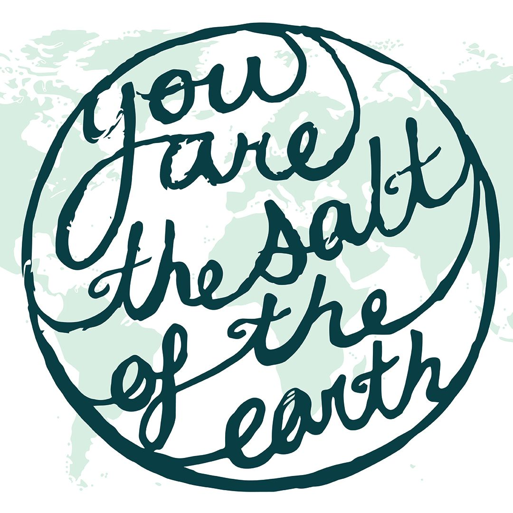

NATHAN
SPORRER
SUMMER
TRIP
SUPPORT ASK
Hello!
I've finished my first semester at Illinois State University where I am studying graphic design. I've gotten
involved in multiple clubs such as the School's disc golf club as well as The Salt Company, which is one of the
campus ministries at ISU. But most importantly I've grown in my faith so much this semester.
Next summer (2024) I will be traveling with a team from ISU's Salt Company to Africa during May—July!
We'll be spending our time on college campuses making friends, sharing the Gospel, and learning about the languages & cultures of Africa!
WHY IM GOING OVERSEAS WITH SALT?
Here are three elements of my upcoming Summer Trip that I'm excited about!

LOW GOSPEL ACCESS
The area where I will be traveling in Africa has little access to the gospel, even though roughly 85%
of
the country identifies as Christian
STUDENTS REACHING STUDENTS
As everyone on our team is a college student, it makes sense to travel to a place
with lots of college
students to evangelize. There are over 500,000 university students in the city we are traveling to!
LONG-TERM HOSTS
We will be working alongside long-term missionaries that are already stationed in Africa! These
missionaries partner with The Salt Network and The Salt Company.
WOULD YOU CONSIDER GIVING?
HOW YOU CAN HELP? The best two best ways you can help is through prayer and financial support.
Both are greatly appreciated!
The total cost of the trip is $5,200, I will be donating $500 and Salt Church is matching that $500 which means that I need to fundraise $4,200 for this trip. Even if you can only give $100, $50 or even $25 it all adds up! Give what you can and God will sort everything out!
If you would like to contribute:
If you would like to contribute, you may go to my personal fundraising link: https://fcsmnstry.io/c71/Mzl4DPQgKY. In order
to reach my support raising deadline, please send your gift by March 1st. As a point of clarity, your
contribution is being given toward the global ministry of The Salt Company. If for any reason I am not able to
go, your contribution will remain in the global ministry fund of Cornerstone Church to be used for other global
purposes. After giving online, you will receive an email to keep as a receipt for your tax-deductible
gift.
If you would rather give via check, please send checks to "The Salt Company" at this address: 200 W
North St (PO Box 473) Normal, IL 61761
Along with your check, please include a note in the envelope with
my first and last name (Nathan Sporrer).
As I mentioned prayer is another way to support along with the financials.
I am asking for your support in prayer. I ask that you please commit to praying for my team while we prepare
for our trip and also pray for us while we are overseas. Below are some ways that we ask you to pray
specifically for our trip:
- Safety for the entire team.
- God would work through the team during our time in Africa and after.
- Our team can be fully supported financially and through prayer.
- All team members stay healthy before and throughout the trip.
Thank you for joining me on this project, it is a privilege to share this Kingdom-building process with you!
Thank you for considering helping me make this trip a reality through prayers and funding!
In
Christ,
Nathan Sporrer